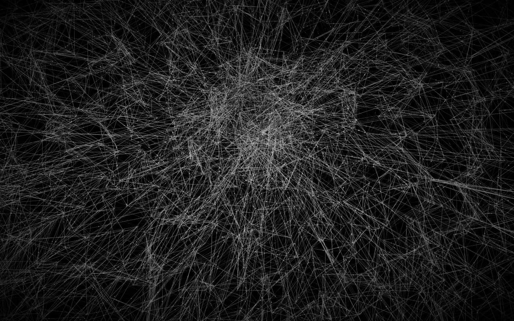

Build in Unreal
Creators work in Unreal Engine as they normally would, with their own lighting, materials, and environments.
01Tools & PluginsUnreal Engine editor plugin
An Unreal Engine plugin that turns an Unreal scene into a web-ready 3D experience. It is live as UnrealTwin, where a scene becomes a link anyone can open in a browser, on any device.

DirectSplat is proprietary work for the company behind UnrealTwin. This page covers what the plugin does and what I was responsible for. It does not describe how it is built, and the image above is illustrative.
Sharing an Unreal environment usually means a heavy build, a video, or a streaming server. DirectSplat gives creators a lighter path: the scene itself, interactive, in a web page.
Creators work in Unreal Engine as they normally would, with their own lighting, materials, and environments.
The plugin turns the scene into a web-ready 3D experience from inside the Unreal editor.
The result opens as an interactive scene in the browser, so clients, teams, and audiences can explore it on any device.
UnrealTwin presents the product around three promises, all of which the plugin has to deliver on.
Lighting, reflections, and shadows carry over through Gaussian Splatting, so the web version keeps the character of the original.
Scenes load in the browser on demand, without installing anything or waiting for a build.
Complex scenes become lightweight, interactive experiences that run on phones, tablets, and desktops alike.
I was responsible for the Unreal Engine plugin from start to finish.
The plugin’s structure, its C++ and Blueprint systems, and the experience creators use inside the Unreal editor.
The full conversion workflow, from a scene in the editor to a result ready for the web.
The link between the plugin and the UnrealTwin web platform, so creators can go from the editor to a shareable experience.
Packaging the plugin as a distributable product and taking it to a live release.